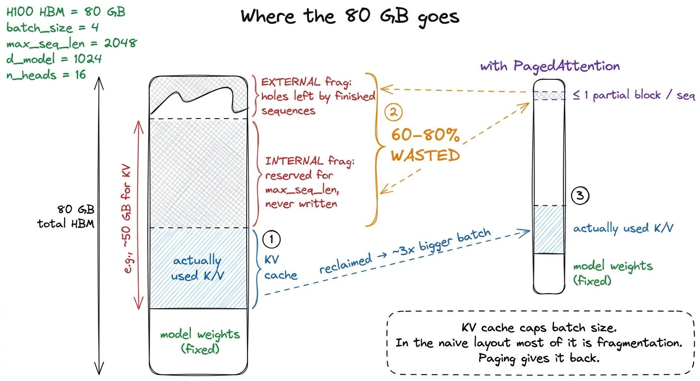
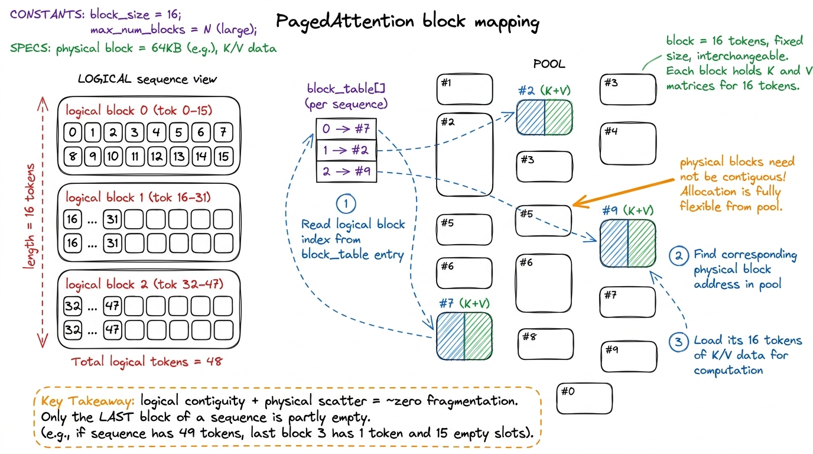
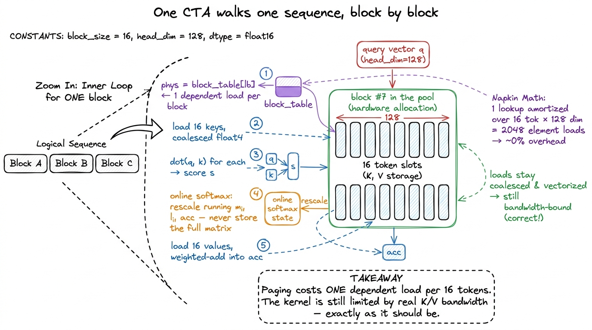
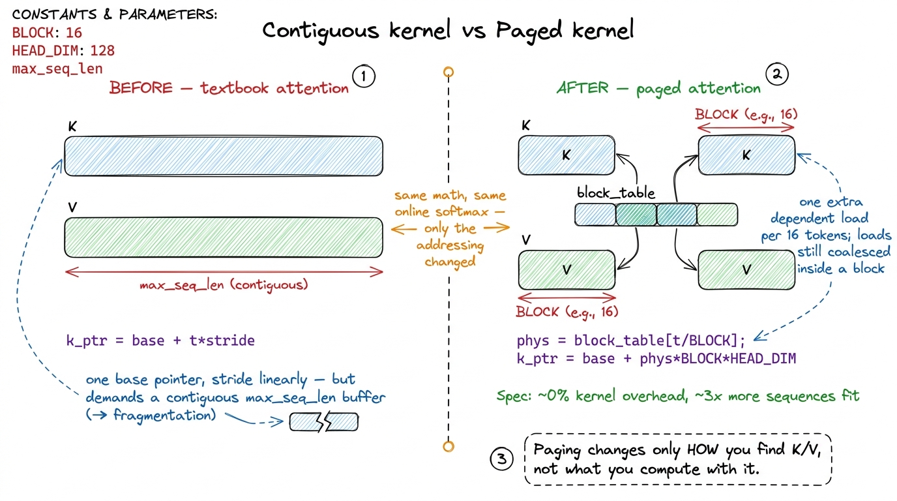
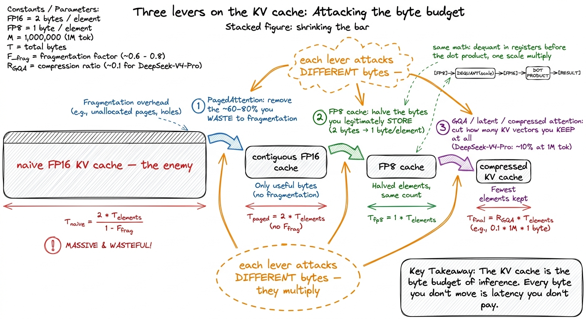

The KV cache & PagedAttention
Here is a sentence I want you to keep in your head for the whole article: training a transformer is a compute problem, but serving one is a memory problem. That flip — from compute-bound to memory-bound — is the single most important fact about inference, and this article is the place where it stops being a slogan and becomes concrete, byte by byte.
Let me set the scene from zero, because everything downstream depends on it. When a language model generates text, it does not write a whole sentence at once. It writes one token at a time. You give it a prompt, it emits one token; you append that token to the prompt, feed the whole thing back in, and it emits the next; and so on, hundreds of times, until it decides to stop. Each of those steps is a forward pass through the entire network. So a 200-token answer is 200 forward passes, one after another, each depending on the last. That serial, one-token-at-a-time phase is called decode, and it is where a served model spends almost all of its life.
Here is the question this article answers: when a model is decoding, what is the GPU actually doing with its time? The intuitive guess — "matrix multiplies, it's a neural network" — turns out to be almost entirely wrong. The honest answer is that the GPU spends decode heaving a giant array of numbers called the KV cache back and forth across memory, doing a trivial amount of arithmetic on it, and the expensive tensor cores you paid a fortune for sit mostly idle. Once you see why that is true, the two great tricks of production inference — PagedAttention and the FP8 KV cache — stop looking like clever hacks and start looking inevitable.
We will build the KV cache up from first principles, prove with napkin math that decode is bandwidth-bound, watch the naive memory layout bleed most of the GPU to waste, fix it with a page table stolen from operating systems, follow the one line of kernel code that pays for the fix, and finally shrink the payload itself with FP8. Every number comes from a small example you can check by hand.
Why do we cache anything at all?
Start with attention, the only part of a transformer that looks backward in time. To produce the next token, the model computes, for the token it is currently working on, a query vector q. It then compares that query against a key vector k for every token that came before, and uses those comparisons to blend together a value vector v from each past token. The keys say "how relevant am I to what you're asking," the values say "here's what I contribute if I'm relevant." That is attention in one breath: q dotted against every past k, softmaxed into weights, used to average every past v.
Now the natural question. To generate token number 500, I need the keys and values of tokens 0 through 499. To generate token 501, I need tokens 0 through 500. Those overlap enormously — token 501's job re-uses all the same past keys and values that token 500 used, plus one more. So why would I ever recompute them?
I wouldn't. Recomputing every past key and value at every step would cost O(n²) work per token and O(n³) over a full generation — serving would be hopeless. Instead, the moment a token is processed, its per-layer key vector and value vector are written into a running buffer and never recomputed. That buffer is the KV cache. With it, each decode step only has to read the history and compute one new query against it. The work per step drops from O(n²) recompute to O(n) read. This is not a micro-optimization; without it, autoregressive generation of long sequences simply does not work at production speed.
 figure rendering · Attention needs every past key and value. Recomputing them is hopeless
figure rendering · Attention needs every past key and value. Recomputing them is hopelessThe napkin math: decode is a bandwidth problem
We saved ourselves from O(n²) recompute. But look closely at what the O(n) read actually costs, because this is where the surprise lives.
Consider one decode step, for one sequence, for one layer, for one KV head. The kernel must stream the entire history of keys and values for that head out of HBM (the GPU's main memory) into the SM, compute one dot-product-and-softmax against them, and write back a single small output vector. Now do the arithmetic-per-byte accounting, because that ratio — the arithmetic intensity — is what decides whether you are compute-bound or memory-bound.
For each element of K that you load, you do about one multiply and one add (the dot product) — two FLOPs. Same for V. In FP16, each element is 2 bytes. So you are doing roughly 2 FLOPs for every 2 bytes loaded, an intensity of about 1 FLOP per byte. Hold that number. The H100's ridge point — the intensity at which its compute and its bandwidth are balanced — is roughly 295 FLOPs per byte. Decode sits at 1. You are running your GPU at about 1/295th of the intensity it wants. The tensor cores are starving.1 One FLOP per byte is essentially the same intensity floor as the naive GEMM baseline. The fix there was reuse: a block of threads shares each loaded value across many multiplies. In decode, for a batch of one, there is nothing to reuse — each token's K and V are read exactly once and thrown away. Batching is the only lever that adds reuse: multiple sequences (or multiple query heads under grouped-query attention) share the same K and V loads, which is exactly why throughput keeps climbing with batch size long after single-stream latency has already bottomed out. See batched decode.
Let me put real numbers on the payload so the "hard floor" becomes tangible. Take a single 8192-token sequence, a model with 8 KV heads, head dimension 128, in FP16. Per layer:
K bytes = 8192 tokens × 8 heads × 128 dim × 2 bytes = 16.0 MiB
V bytes = same = 16.0 MiB
per-layer KV = 32.0 MiBAt around 64 layers, that is about 2 GiB of KV cache for one sequence — and every single decode step must read the whole thing, because attention looks at all of history. Now divide by bandwidth. The H100 moves HBM at 3.35 TB/s. Streaming 2 GiB takes:
2 GiB / 3.35 TB/s ≈ 0.6 msSo there is a ~600-microsecond floor on per-token latency that comes purely from moving bytes, before you have done a single useful FLOP. And the chip's headline 989 TFLOP/s of FP16 tensor-core throughput? Completely irrelevant here. During decode you will never get near it. This is the whole thesis in one calculation: decode latency is set by how many bytes of KV cache you move, full stop.
 figure rendering · Prefill lights the tensor cores; decode just heaves the KV cache back
figure rendering · Prefill lights the tensor cores; decode just heaves the KV cache back There is one more way to see why this floor is real, and it is worth drawing on a timeline, because "bandwidth-bound" is really a statement about time. Picture one decode step as a horizontal track from left to right. Almost the entire track is one long bar: the SM waiting on bytes to arrive from HBM, block after block of KV streaming in. The actual arithmetic — the dot products, the softmax — is a tiny sliver riding on top of that stream, finishing the instant its bytes land. The tensor cores are idle for essentially the whole track, waking up for microseconds and going back to sleep. Stack a few of these steps back to back and you see the shape of decode: a serial chain of steps, each one a long memory-wait with a whisper of compute at the end. That is what "memory-bound" looks like when you put it on a clock.
 figure rendering · On a timeline, a decode step is one long HBM stream with a sliver of c
figure rendering · On a timeline, a decode step is one long HBM stream with a sliver of cIf you want the fuller treatment of that compute-vs-memory split, prefill vs decode and the three regimes are the sibling articles; here we take it as established and ask the next question: if the KV cache is the enemy, how do we store it without wasting the GPU?
The obvious layout, and where it quietly bleeds
Here is the layout everyone writes first, and it is a completely reasonable first instinct. For each sequence, allocate one big contiguous tensor of shape [max_seq_len, num_kv_heads, head_dim] for K and one for V, per layer. To append a token, write at the current position. To read history, start at the base pointer and stride linearly. Contiguous memory, dead-simple pointer arithmetic, perfectly coalesced reads. What could possibly be wrong with it?
Two things, and they both hide inside one word: max_seq_len.
Problem one: you don't know the length in advance. A request might generate 12 tokens or 4,000. You cannot know until it stops. So to be safe, you allocate for the maximum the model supports. Now a request that stops after 12 tokens has reserved space for thousands of token-slots it never touches. That reserved-but-unused space inside an allocation is called internal fragmentation, and on real serving traces it is not a rounding error — it is most of your memory.2 The original vLLM paper measured that prior serving systems wasted 60–80% of KV memory to fragmentation and over-reservation. Because KV cache is the binding constraint on how many sequences fit on the GPU at once, wasting 70% of it means roughly a 3× cut in concurrent sequences — throughput you are simply leaving on the floor before a single kernel runs.
Problem two: contiguous per-sequence buffers fragment the pool. Sequences arrive and finish at different times, freeing variable-sized holes across your memory pool. A new long request shows up needing one big contiguous run — and you may have plenty of total free memory but no single contiguous block big enough to hold it. That is external fragmentation, the same disease that plagued early memory allocators. Your options are both bad: reject the request, or copy live caches around to defragment mid-serving.
Why does any of this matter so much? Because the KV cache competes directly with the model weights for the ~80 GB on the card, and it is the thing that caps your batch size. The bigger your batch, the more query heads share each K and V load, the closer you climb toward good throughput. Every byte lost to fragmentation is a sequence you could have been serving and aren't. Fragmentation is not an aesthetic complaint. It is throughput on the floor.

figure rendering · The naive layout bleeds most of its KV budget to fragmentation. PagingThe idea: give the cache a page table
Here is where I want you to slow down and enjoy the trick, because it is one of the cleanest borrowings in all of systems engineering. The problem we just described — "I need the illusion of contiguity, but my physical memory is fragmented to bits" — is exactly the problem operating systems solved decades ago with virtual memory.
Recall how virtual memory works. Every process thinks it owns a huge, perfectly contiguous address space. In reality its data is scattered across physical RAM in fixed-size chunks called pages. A page table maps each contiguous virtual page to whatever scattered physical page currently holds it. The process never sees the scatter; the page table hides it. Contiguity is a lie the hardware tells, and it is a very useful lie.
PagedAttention applies this idea, almost verbatim, to the KV cache. Instead of one big contiguous buffer per sequence, the engine carves all of its KV memory up front into a large pool of fixed-size blocks. A block holds the K and V for a small fixed number of tokens — vLLM commonly uses 16. Then each sequence gets a block table: a tiny array that maps its logical block index (which is just token_position / block_size) to a physical block number somewhere in the pool.
Concretely: a sequence's tokens 0–15 live in whatever physical block its block-table slot 0 points at. Tokens 16–31 live in slot 1's block. Tokens 32–47 in slot 2's block. And — this is the whole point — those three physical blocks need not be anywhere near each other in memory. The block table stitches the scattered physical blocks back into a logically contiguous sequence, exactly as an OS page table stitches scattered physical pages into a contiguous address space.

figure rendering · The block table maps a sequence's logical blocks to scattered physicalNow watch the two problems evaporate. Internal fragmentation collapses to at most one partially-filled block per sequence — the last one — because every other block is exactly full. There is no more max-length over-reservation, because you allocate blocks lazily, one at a time, only as the sequence actually grows. External fragmentation vanishes entirely, because every block is the same fixed size and therefore interchangeable: any free block fits any sequence, so there are no awkwardly-shaped holes. On real workloads this recovers the wasted majority of KV memory, and — because KV is what caps batch size — that reclaimed memory turns almost linearly into a bigger batch. This is the mechanism behind vLLM's headline throughput.
And there is a second gift that falls out of the exact same design, for free. Because a physical block is just a numbered chunk that any block table is allowed to point at, two sequences that share a common prefix — the same system prompt, the same few-shot examples, the same RAG context — can point their early block-table slots at the same physical blocks, guarded by a reference count.3 This is prefix caching, and it is enormous in practice: a chatbot with a 2,000-token system prompt shared across thousands of concurrent users stores that prefix's KV once instead of thousands of times. Parallel sampling and beam search fall out of the same trick — the branches share their common history and only diverge where they actually differ. When one branch first writes into a shared block, you copy it just-in-time and let that branch scribble on its own copy. That is copy-on-write, lifted straight out of the OS fork() playbook. The same page-table abstraction that killed fragmentation also gave us free prefix sharing. That is what a good abstraction looks like.
The bill comes due in the kernel
Elegance on the memory-management side is never free; it buys you a complication on the kernel side, and honesty demands we look at it. A textbook attention kernel assumes K and V are contiguous. That assumption is what lets it compute one base pointer and stride linearly through history — clean, coalesced, fast. Paging just broke that assumption on purpose.
So the question the kernel now has to answer, for token t, is: where does token t's KV actually live? And the answer is no longer a simple offset — it is an indirection through the block table:
physical_block = block_table[t / BLOCK]
offset_in_block = t % BLOCKThe attention kernel has to do this lookup itself, per block, as it streams the history. Here is the shape of the paged attention kernel. Assign one thread block (one CTA) to handle one query against one KV head. Walk the sequence block by block. For each logical block, read the block table to get the physical block id, compute that block's base address, and load its BLOCK keys and values with ordinary coalesced, vectorized loads (float4 where alignment allows). Accumulate the softmax online — the FlashAttention trick of carrying a running max and running denominator so you never have to materialize the full attention matrix in memory — then move to the next block.
// One CTA handles one (query, kv_head). Walk the sequence block by block.
const int num_blocks = ceil_div(seq_len, BLOCK);
float m_i = -INFINITY, l_i = 0.f; // running max, running denom
float acc[HEAD_DIM] = {0};
for (int lb = 0; lb < num_blocks; ++lb) {
int phys = block_table[seq_id * max_blocks + lb]; // <-- the indirection
const half* k_blk = k_cache + phys * BLOCK * HEAD_DIM;
const half* v_blk = v_cache + phys * BLOCK * HEAD_DIM;
for (int t = 0; t < BLOCK; ++t) { // tokens in this block
float s = dot(q, k_blk + t * HEAD_DIM); // vectorized load inside
float m_new = fmaxf(m_i, s);
float p = __expf(s - m_new);
float scale = __expf(m_i - m_new);
l_i = l_i * scale + p; // online softmax rescale
for (int d = 0; d < HEAD_DIM; ++d)
acc[d] = acc[d] * scale + p * __half2float(v_blk[t * HEAD_DIM + d]);
m_i = m_new;
}
}The single line that matters is int phys = block_table[...]. Everything else is ordinary FlashAttention-style streaming. Now the natural worry: doesn't that extra dependent load wreck performance? Let's reason about it instead of guessing. That lookup happens once per block, and a block holds 16 tokens, and each token costs HEAD_DIM = 128 element loads. So the single indirection is amortized over 16 × 128 = 2,048 element loads. It is noise. The kernel stays firmly bandwidth-bound on the actual K and V reads, which is exactly where a decode kernel should be bound. We paid a rounding error to reclaim most of the GPU. Good trade.

figure rendering · Zooming into one block: the only new cost is a single block-table lookThe block size is a genuine tuning knob, and it is worth understanding the tension. Smaller blocks waste less memory in that final partial block (finer granularity, less rounding up) but pay the indirection more often. Larger blocks amortize the lookup better but round up more aggressively, so the last-block waste grows. 16 is the common sweet spot — small enough that a short sequence doesn't waste much, large enough that the lookup vanishes. Because the kernel is bandwidth-bound, its optimizations are all memory optimizations, not math ones: keep the loads coalesced and vectorized, keep enough warps resident to hide the dependent block-table load, and — the biggest lever of all — reduce the number of bytes each token costs in the first place. Which is the next section.

figure rendering · The paged kernel does identical attention math; only the addressing chFP8 KV cache: halve the bytes, halve the floor
We reclaimed the wasted bytes with paging. Now attack the bytes you legitimately store. Go back to the thesis: decode latency is set by how many bytes of KV you stream per step. So the most direct possible win is to make each K and V element smaller.
Storing the cache in FP8 — an 8-bit float, typically the e4m3 variant — instead of FP16 halves the KV footprint at a stroke. Trace both consequences, because you get two wins from one change. First, half the HBM traffic per decode step, which — since decode is bandwidth-bound — means roughly half the memory-bound latency. Second, twice as many tokens fit in the same GPU memory, so a bigger batch and higher throughput. Latency and throughput, from flipping one flag (--kv-cache-dtype fp8 in vLLM).
The paged kernel absorbs this almost for free, and the reason is worth seeing. It loads FP8 bytes from the cache and dequantizes them to FP16/FP32 in registers right before the dot product. So the compute path — the actual dot(q, k) and the softmax — is byte-for-byte unchanged; only the loads shrank. You keep a per-tensor or per-block scale factor alongside the cache so that dequantize is a single multiply. The bytes moving across HBM halve; the math stays identical.
But should we trust it? Quantizing weights aggressively can hurt a model badly — why is the KV cache different? Two reasons, and they are the honest ones. First, the softmax is forgiving: it cares about the relative ordering of scores far more than their exact magnitudes, and small per-element errors mostly wash out after the exponential-and-normalize. Second, any single key's contribution is one term in a large sum — the attention output averages over hundreds or thousands of values, and averaging is a powerful noise-suppressor. So the KV cache tolerates low precision far better than weights do, and in practice the accuracy hit is small and usually invisible on downstream metrics.4 You can push well past FP8, and this is exactly where the 2025 frontier lives. The next lever is architectural KV reduction. Grouped-query attention already shares K and V across query heads — that "8 KV heads" in our sizing example is GQA quietly at work, cutting the cache several-fold versus one KV head per query head. Beyond that, latent and compressed attention shrink the cache by another order of magnitude. DeepSeek-V4-Pro reports needing only about 10% of the KV cache of its predecessor (DeepSeek-V3.2) at a 1M-token context, via a hybrid of Compressed Sparse Attention and Heavily Compressed Attention, and needs only ~27% of the per-token FLOPs at that length. It stores the base model in FP8 with FP4 MoE experts. Paging, FP8, and architectural compression stack cleanly — they attack different bytes.

figure rendering · Three independent levers on the same enemy: paging removes wasted byteStack the three and the picture is clean. PagedAttention removes the bytes you were wasting to fragmentation. FP8 halves the bytes you legitimately store. Architectural tricks — GQA, latent attention, compressed attention — cut how many KV vectors you keep at all. Each attacks a different part of the same enemy, and the enemy is always the same: the KV cache is the byte budget of inference. Every byte you don't move is a microsecond of latency you don't pay.
When the paged kernel breaks: a debugging aside
One honest closing note, because paging introduces a failure mode the textbook kernel never had. That block-table indirection is a pointer computed from data. If the block table is ever corrupt — an out-of-bounds physical block id is the classic — the kernel reads garbage or, worse, wanders off into memory it doesn't own and simply wedges. And a hung kernel is nasty to debug, because the friendly printf approach produces no output at all when the kernel never returns.
This is where vLLM's own tooling earns its keep, and it is worth knowing the exact incantations. You enable GPU coredumps with CUDA_ENABLE_USER_TRIGGERED_COREDUMP=1 plus a named pipe via CUDA_COREDUMP_PIPE, then — while the kernel hangs — trigger a dump by writing a byte into that pipe (literally dd if=/dev/zero bs=1M count=1 > /tmp/cuda_coredump_pipe_…). You open the resulting core in cuda-gdb to see where the wedged kernel is stuck. Then, because production attention kernels are template soup with call chains fourteen inline frames deep, you use nvdisasm (with -ndf -c -gi) to recover the actual inlined source line behind the faulting address. The one non-negotiable prerequisite: compile with -lineinfo (or NVCC_PREPEND_FLAGS='-lineinfo'), or you get an address and no line number and you are lost.5 The full walkthrough — coredump env vars, the pipe trick, cuobjdump to locate the kernel index, and reading a 14-frame inline stack back to one CUTLASS source line — lives in the vLLM debugging workflow. It is the natural companion to this article: paging is what makes these kernels fast, and this is how you fix them when the block table lies.
The through-line
We started from one sentence — serving is a memory problem — and made it concrete. We asked why decode reads the whole KV cache every step, and answered it with the O(n²)-recompute problem the cache exists to kill. We did the napkin math and found decode pinned at ~1 FLOP/byte, 295× below the H100's ridge, with a hard ~600-microsecond latency floor set purely by moving 2 GiB of cache. We watched the naive contiguous layout bleed 60–80% of that precious budget to fragmentation, and stole the operating-system page table to get it back — collapsing waste to one partial block per sequence and getting free prefix sharing as a bonus. We followed the single line of kernel code that pays for paging, and proved it costs essentially nothing. Then we shrank the payload itself with FP8, halving both the latency floor and the memory footprint, and saw the architectural frontier where DeepSeek pushes the cache down another order of magnitude.
Next we take the same online-softmax kernel skeleton you saw above — the running max, the running denominator, the never-materialize-the-matrix trick — and build it out into a proper FlashAttention kernel for prefill, where, for the first and only time in inference, there is finally enough arithmetic to wake the tensor cores back up.